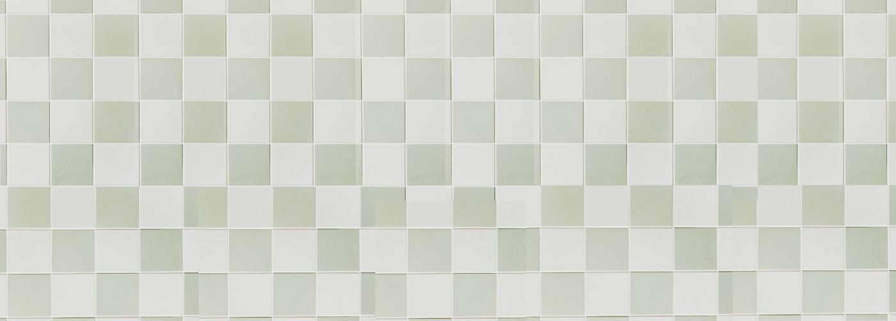
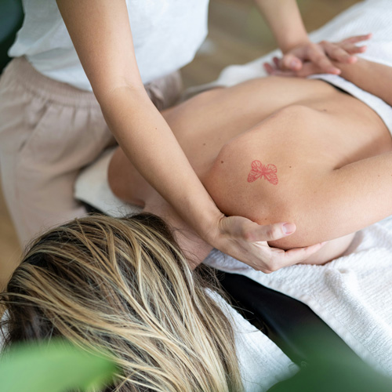
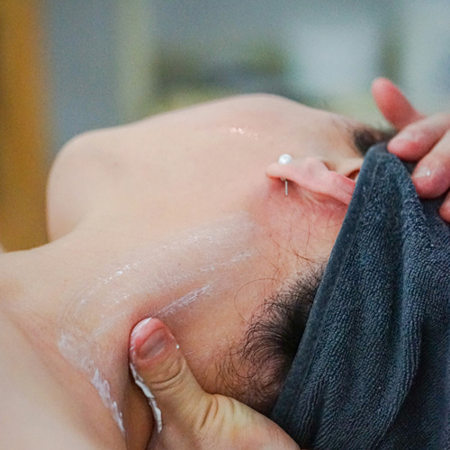
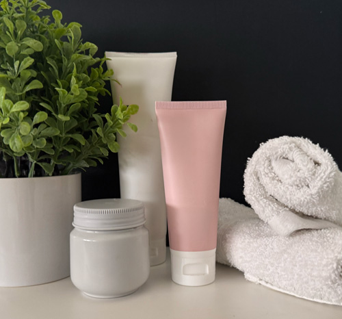
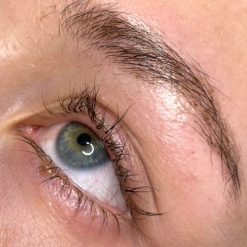
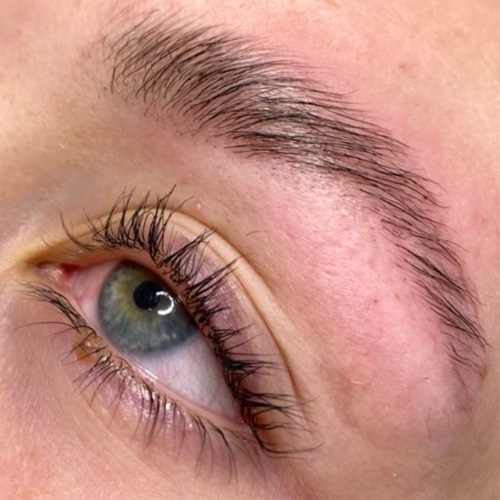

Unna dig en massage i 60 eller 30 minuter. Fokus är rygg och axlar. Massagen är en mjuk och avstressande behandling som ger maximal avkoppling för kropp och själ.

Massage endast för nacke. Det är en mjukgörande massage som mjukar upp muskler och stelhet. Vid värk utgår vi ifrån din egna nivå.

Behandlingen skräddarsys utifrån din huds behov. Metoderna som används kan, utifrån din hy, vara protömning, återfuktning, akne-behandling eller att endast få en uppfräschning.
Behandlingen passar dig som vill ge huden en snabb och effektiv återfuktning. Behandlingen innefattar en ansiktsmask utifrån din huds behov, exfolierande rengöring och en avslutande mjukgöring med ansiktsprodukter. På dessa 30 minuter får du en boost av återfuktning och rengöring.

Före lash- och browlift

Efter lash- och browlift
Med ett lashlift kan du slänga din fransbörjare. De böjda och färgade fransarna ger ett naturligt resultat som ser lätt sminkat ut, utan sminket! Browlift sätter dina ögonbryn på plats och ger dig ett lyft. Utöver browliftet färgas ögonbrynen och formas efter dina önskemål. Behandlingen ger dig ett lyft och ett piggare ansikte.